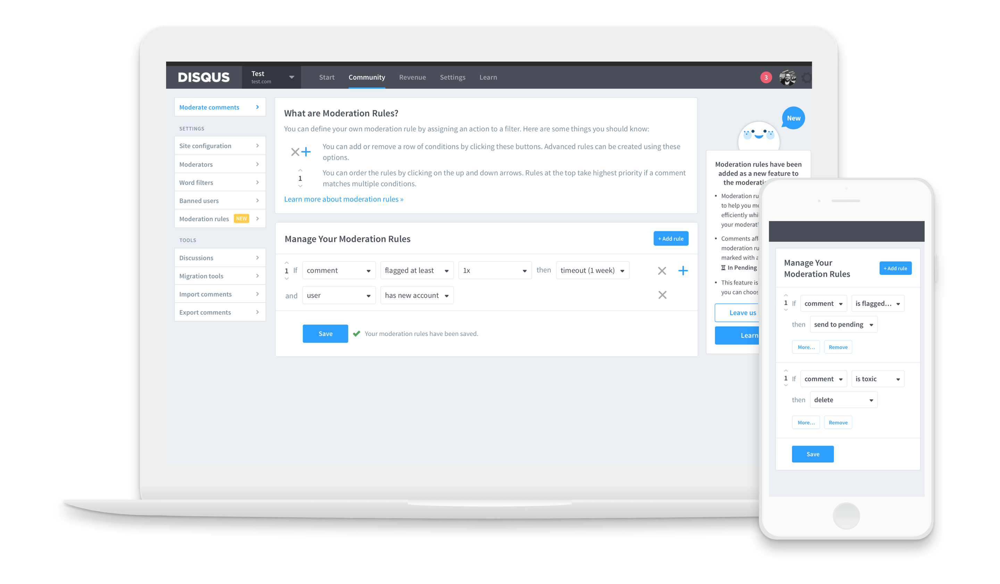
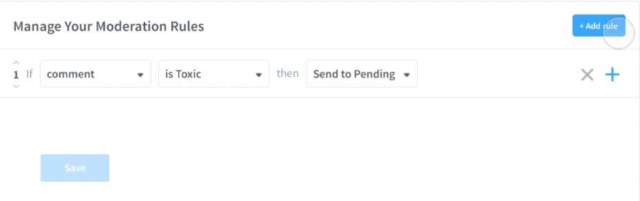
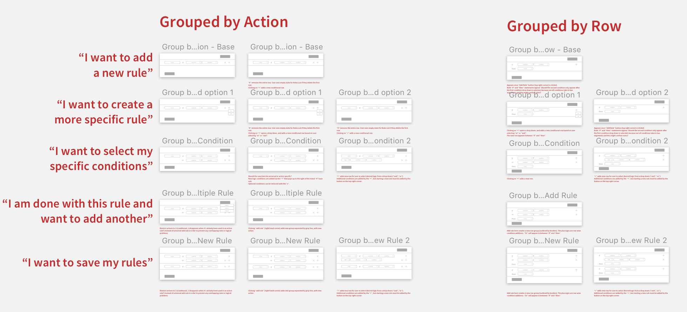
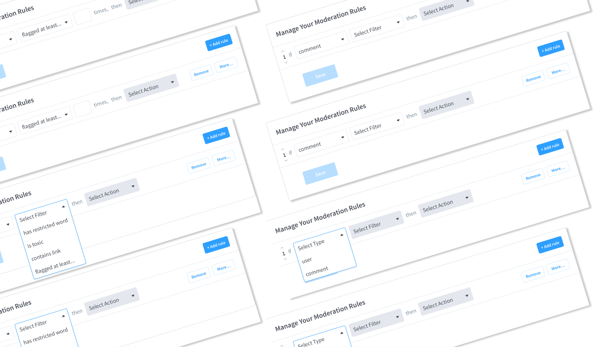
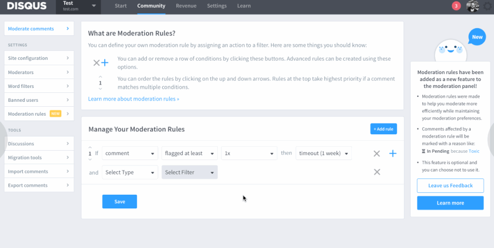
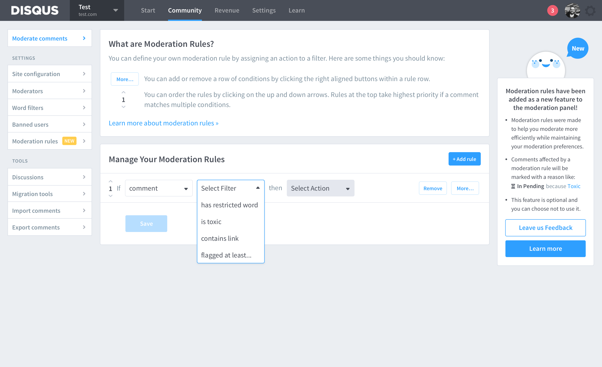
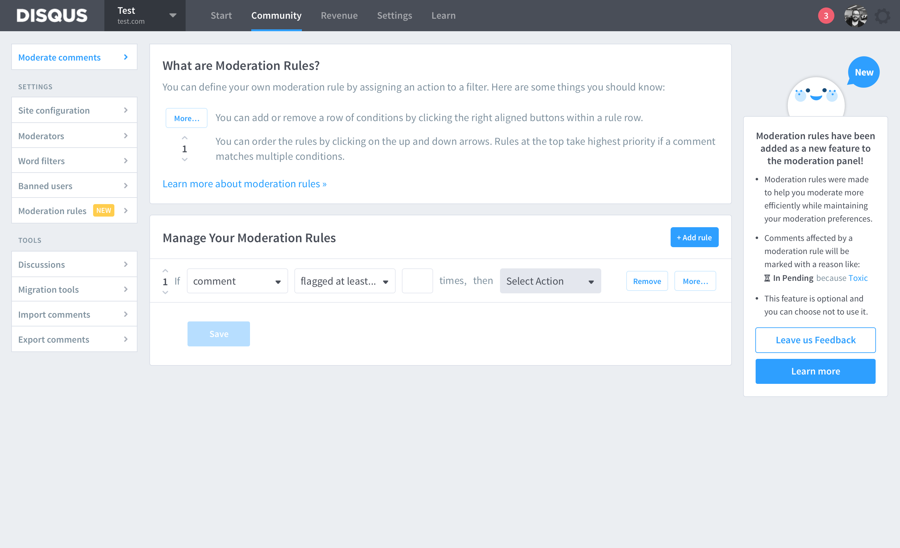
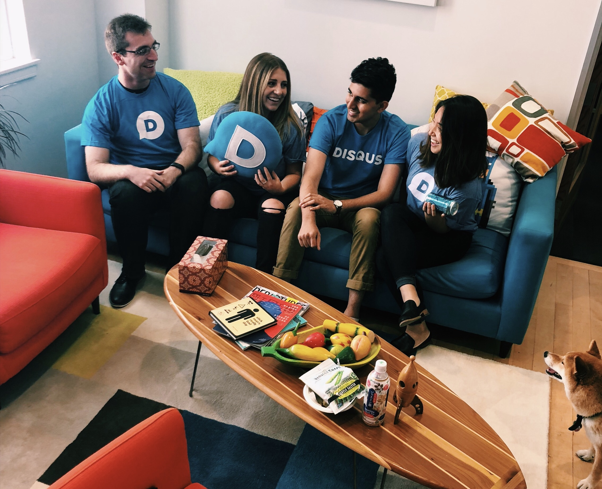

Disqus Moderation Tools — Product Design Intern
Disqus is a worldwide comment hosting service for websites. Its features include social network integrations, admin moderation options, and online community building functions.In summer 2018, I worked closely with product managers and engineers as a product design intern in summer 2018.
I ramped up the summer with a couple small projects, like shipping a comment edit UI fix and designing marketing materials, but focused most of my efforts for the remaining 6 weeks on moderation tools for publishers and moderators.

Side project: worked with the marketing intern for roll out graphics, now live on the Disqus landing page.

Side project: Prototyped and made design spec to support GIFs in comments using Tenor API.
Publishers identify moderation burden as one of their biggest frustrations when hosting their content on the Disqus network.
Disqus users include publishers who see thousands of comments per day. Currently, publishers either use third party moderation services or employ dedicated moderators volunteer their time sifting through individual comments.
Improving moderation tools helps add value to the publisher experience and improve publisher retention on our software as a service (SaaS) plans.
Additionally, there were troves of existing research dedicated to understanding toxicity and moderation across Disqus sites, along with feedback from the first release of Moderation Rules, a set of tools that help users automate moderation.

Proposed moderation rules iteration with additional/advanced rule options.
Current moderation rules experience with limited filters.
By leveraging the existing research and usability feedback, I was able to empathize with publisher needs and moderation behavior.
Team Constraints
I met with some team members who were a part of the first iteration team to understand the product thinking and implementation constraints that were considered internally.
Comp Analysis
I considered platforms that use advanced filter or search interfaces to understand UI across different industries. I also looked at platforms that host discussions (Wordpress, Youtube, Reddit) to understand moderation behavior among online communities.
Qualitative Data
I read through the existing past research, which included well-documented project outlines, publisher retro feedback, insights from usability tests, and customer support.
Quantitative Data
I used several dashboards in our internal data analysis tool to help me visualize global trends across the Disqus network (and put my rusty SQL knowledge to use).
👵 Takeaway 1
Spam commenters rapidly create new accounts to continue posting spam/harassment in order to avoid ban consequence, and there are no filters that factor account age.
🕰 Takeaway 2
Issuing timeouts can only be done manually, and on a case-by-case basis. Publishers worry about non-spam comments ending up in a long pending queue for moderation.
🤝 Takeaway 3
The current UI does not allow for complex, context-aware rules and that is an impediment for trust in auto-moderation.
Target Users
Much of the iteration feedback and existing research came from users who were either part of the publisher council or medium to heavy moderation users, so the ideation for this project was narrowed down to suit their needs. More specifically:
1. Members of the publisher council Active feedback, familiar with Moderation Rules.
2. SaaS plan subscribers Advanced moderation tools are most available for Pro and Business plan publishers
3. Publishers with at least 30 moderation actions weekly Users who frequently experience moderation burden
Key Use Cases
1. Users who rapidly create new accounts to continue posting spam/harassment (take account age into consideration)
2. Users who end up in long list of pending comments.
3. Users whose comments do not warrant permanent banning, but pose problems for repeat moderation actions.
Considerations
Considering the amount of research that had already been invested in the project, it made the most sense to build off the feedback we had earlier and focus primarily on the rule creation interface.
Other opportunities in the problem space weren’t supported by enough research to pursue (i.e. can’t confirm that onboarding is ineffective, color coding actions might be misleading, etc).
For the interface, I explored different ways of adding advanced rules and logic to suit the proposed rule flows. I wanted to keep the interface familiar, for the front-end engineers and publishers’ sake, with access to advanced settings.
After syncing with internal stakeholders, I iterated on low fidelity concepts for advanced rule creation.
Mid fidelity flow for how a user might use proposed filters to circumvent new account spam.

Mocking wireframes to help me visualize different states of the rule creation interface, and narrow down options to move to higher fidelity designs.
Allow for more complex rules by assigning actions to multiple filters and conditions.
This meant expanding the drop down selections and thinking of ways to present options without restraining the user. We also had to balance this with providing users with the right set up options based on data analysis, because it would be inefficient to develop filter options that won't get used.
Maintain the consistency of the current “If … then” structure.
In past usability sessions, publishers often described their use cases in natural language that fits the "If … then" structure; additionally, it was easier for the backend to implement with this format.
Not all publishers were familiar with advanced logic.
The interface should be as flexible as possible without taking away from basic rule creation. Even though the project scope was narrowed down to more technical use cases, it should be usable on a spectrum of abilities.

Feature Refinement
1. Advanced logic
Our goal was to make rows easy to add and remove in order to allow access to more advanced rules without taking away from writing basic rules. We learned from research that too many options might be overwhelming and lead to moderator choice paralysis.
2. Additional drop down options
We have previous analysis to infer which options will be most used by publishers. In using validated research, it helps us predict adoptability. For example, 7 days is a popular timeout duration.
3. Conditional rules
We needed to ommunicate active/inactive drop down options, so users follow can write rules that are actually feasible. This also helps the backend handle conditional drop downs such that new rules have no logical interference.
In order to test how effective our concepts were, I created a high-fidelity prototype and designed usability sessions.
Testing Goals
We were able to receive email feedback from some publishers on timeouts and new accounts, but were unable to get ahold of target publishers for user testing during my time at Disqus.
Instead, I drafted a research guide and conducted two usability sessions via an Invision prototype with engineers at Disqus to get a better understanding of:
1. What is and isn’t working with the interface
2. Opportunities for education about advanced rule creation
3. Reactions to new design features
4. Technical constraints from front-end and back-end engineers



Usability Findings
What Worked
Rule creation was straightforward (testers ranked 3/10, with 1 being very easy and 10 being very difficult). The “if, then” structure is intuitive and reads easily from left to right. Options for each drop down selection presented were clear and predictable.
What Didn't Work
There needs to be even more customizability and intentionality with the range of available options. Filters with additional conditions need to be communicated better. The “x” button was confusing because its greyed-out color made it seem unclickable — call-to-action buttons sitewide are typically blue. It was also unclear how it related to the “Add Rule” button.
Future Challenges
Determining best options for timeout duration how publishers use the “timeout” feature to temporarily ban users, and determining best options for addressing ban dodgers. Finally, balancing a radeoff between diving deep with customizability vs. creating a basic tool for all publishers.
Final Reflections
In the future, I will show work earlier, and more often, as well as seek more mentorship from the non-product team (i.e. analytics, marketing etc). If I were to do this project again, I would conduct more preliminary research with our target publishers to better validate our design decisions.
The team for this summer was small, and I had many unique opportunities as the only designer at Disqus during my time there. I got to help facilitate onsite interviews for full-time product designers, lead a research meeting to share my findings, sync with people across different teams and roles, and meet with my design mentors outside of work. I’m excited to see what products the team develops next!
